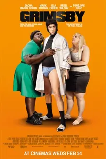

The genetics
Genetics enters this spy comedy only through a bioweapon. The villain, philanthropist Rhonda George, has bought a lethal virus, named 'WorldCure' after her charity, and plans to release it with fireworks over a packed football stadium; the German Wikipedia says her aim is to reduce overpopulation. The film never says where the virus came from or how it was made, and it treats it as a plot device for slapstick: the heroes stop the release by sitting on the fireworks and survive because, absurdly, the elephant semen they were drenched in earlier is the antidote. The real-world disease in the film, HIV, is used for shock jokes about blood splashing into celebrities' mouths. The scheme follows the familiar thriller trope of an elite villain who wants to cull humanity with a pathogen; neither the virus nor its antidote is meant to be taken as science.
How genetics is portrayed
- Overall portrayal of genetics
- negative The pathogen exists only as a mass-murder weapon in the hands of a villainous elite; the comedy never presents it otherwise.
- Outcome of the genetic intervention
- negative The virus is meant to kill a stadium crowd and drives a chain of killings; the heroes stop its release at the last moment.
- Rhonda George and her syndicate (Pavel Lukashenko)
- villain Aim: ideological, malevolent (negative). The philanthropist secretly heads a syndicate that buys a lethal virus to release over a football stadium to reduce overpopulation; she is unmasked as the mastermind and arrested.
The story
Nobby Butcher, a beer-loving football hooligan from Grimsby with eleven children, has not seen his younger brother Sebastian for 28 years; Sebastian is now a top MI6 agent. At a 'WorldCure' charity event hosted by the philanthropist Rhonda George, Nobby's surprise embrace makes Sebastian miss an assassin and shoot a boy with AIDS, whose blood splashes into Daniel Radcliffe's mouth. Branded a rogue agent and hunted by MI6, the brothers follow the trail of the hitman Pavel Lukashenko to South Africa, where they learn that he has bought a virus, and survive a series of grotesque escapades, including hiding inside an elephant during mating. A flashback reveals that Nobby ran away as a child so that Sebastian could be adopted. At the football cup final in Chile, they discover that Rhonda herself plans to release the virus over the stadium with fireworks. The brothers sit on the fireworks and absorb the blasts; they survive because, it turns out, elephant semen is the antidote.